ЦЕНТРАЛЬНЫЙ
ОРДЕНА ТРУДОВОГО КРАСНОГО ЗНАМЕНИ
НАУЧНО-ИССЛЕДОВАТЕЛЬСКИЙ И ПРОЕКТНЫЙ ИНСТИТУТ
СТРОИТЕЛЬНЫХ МЕТАЛЛОКОНСТРУКЦИЙ
им. МЕЛЬНИКОВА
(ЦНИИпроектстальконструкция им. МЕЛЬНИКОВА)
ГОССТРОЯ СССР
ПОСОБИЕ
по
контролю состояния строительных
металлических конструкций зданий и
сооружений в агрессивных средах,
проведению обследований и
проектированию восстановления
защиты конструкций от коррозии
(к СНиП 2.03.11-85)
Утверждено приказом
ЦНИИпроектстальконструкции
им. Мельникова
№ 236 от 30 июня 1987 г.

Москва Стройиздат 1989
Рекомендовано к изданию Научно-техническим советом ЦНИИпроектстальконструкции им. Мельникова Госстроя СССР.
Изложены сведения о видах коррозионных повреждений металлических строительных конструкций и их локализации, даны рекомендации по обеспечению нормальной эксплуатации металлоконструкций, организации работ по контролю их состояния и структуре антикоррозионных служб, а также дополнительные требования к организации обследования конструкций в агрессивных средах и технике безопасности при производстве работ.
Для инженерно-технических работников научно-исследовательских и проектных организаций, специалистов, занимающихся эксплуатацией и обследованиями металлических конструкций зданий и сооружений, а также для работников органов государственного надзора.
Разработано ЦНИИпроектстальконструкцией им. Мельникова (д-р техн. наук А. И. Голубев, кандидаты техн. наук А. М. Шляфирнер, И. В. Левитанский, В. И. Кудишин) при участии МИСИ им. Куйбышева (канд. техн. наук А. С. Коряков), МакИСИ (кандидаты техн. наук Е. В. Горохов, В. П. Королев), ЯГУ (канд. техн. наук В. В. Филиппов). При разработке Пособия использованы материалы УкрНИИпроектстальконструкции, Харьковского Промстройниипроекта, Липецкого отдела ЦНИИпроектлегконструкции им. Мельникова.
1. ОБЩИЕ ПОЛОЖЕНИЯ
1.1. Пособие является составной частью системы нормативных и руководящих документов по правилам проведения технической эксплуатации металлических конструкций производственных и общественных зданий и сооружений, планово-предупредительных, текущих и капитальных ремонтов, обследований, оценки технического состояния, проектирования усиления и других работ, связанных с ремонтом, восстановлением и реконструкцией строительных стальных и алюминиевых конструкций. Пособие регламентирует порядок проведения мероприятий по организации надзора за состоянием строительных металлических конструкций зданий и сооружений и содержит указания, относящиеся, как правило, к конструкциям, подвергающимся воздействию среднеагрессивных и сильноагрессивных сред.
1.2. Пособие разработано в развитие раздела «Металлические конструкции» СНиП 2.03.11-85 «Защита строительных конструкций от коррозии» с учетом основных положений разд. 20 СНиП II-23-81* «Стальные конструкции», методического материала СЭВ МС-7 «Защита от коррозии в строительстве. Правила диагностики состояния конструкций при эксплуатации», государственных стандартов «Единой системы защиты от коррозии и старения (ЕСЗКС)», типовых положений об антикоррозионных службах, союзной республики и министерства (ведомства).
1.3. При проведении работ, регламентируемых настоящим пособием, необходимо руководствоваться также следующими документами:
Положением о планово-предупредительном ремонте производственных зданий и сооружений (М.: Стройиздат, 1973);
Рекомендациями по эксплуатации строительных конструкций производственных зданий промышленных предприятий (М.: Стройиздат, 1981);
отраслевой научно-технической и инструктивной документацией по технической эксплуатации и ремонтам производственных зданий и сооружений, согласованной с Госстроем СССР.
1.4. Рекомендации Пособия распространяются на конструкции:
сохраняемые (с усилением или без него) в составе конструкций здания или сооружения, в том числе после его реконструкции или перестройки;
подвергшиеся коррозионному поражению в процессе длительного транспортирования, хранения и строительно-монтажных работ (до ввода конструкций в эксплуатацию) - при нарушении условий содержания конструкций и необходимости создания условий для их дальнейшей нормальной эксплуатации.
1.5. Рекомендации Пособия регламентируют работы, проведение которых обеспечивает нормальную эксплуатацию конструкций и которые выполняют с привлечением специализированных служб и организаций:
контроль за соответствием мероприятий по защите конструкций от коррозии проектным решениям и за своевременностью (не позднее, чем через 6 мес. после изготовления конструкций) нанесения всей системы лакокрасочного покрытия на новые конструкции, поступившие с завода-изготовителя в огрунтованном состоянии, при соблюдении всех требований СНиП 2.03.11-85;
периодический контроль условий эксплуатации конструкций, состояния конструкций и защитных покрытий для уточнения сроков текущих ремонтов;
регулярное восстановление защитных покрытий в процессе проведения текущих ремонтов;
предварительную оценку технического состояния конструкций, защитных покрытий и оборудования для электрохимической защиты перед капитальными ремонтами, реконструкцией и другими работами, которые не могут быть в полном объеме осуществлены собственными службами предприятий;
специальные обследования состояния конструкций и защитных покрытий при участии специалистов по защите конструкций от коррозии с разработкой проекта защиты от коррозии и проекта производства противокоррозионных работ;
капитальные ремонты защитных покрытий и оборудования для электрохимической защиты конструкций, сохраняемых при реконструкции без усиления; выполнение всей системы мероприятий по защите от коррозии конструкций после их усиления.
1.6. Пособие предназначается для использования следующими службами:
антикоррозионными службами (АКС) предприятий, министерств и ведомств;
отделами капитального строительства и службами технической эксплуатации зданий и сооружений;
подразделениями специализированных организаций, проводящих обследования стальных и алюминиевых конструкций, разрабатывающих рекомендации и проекты восстановления и реконструкции зданий и сооружений, включая защиту конструкций от коррозии;
организациями, выполняющими противокоррозионную защиту строительных металлоконструкций при ремонтах, восстановлении и реконструкция зданий и сооружений;
надзорными органами Госстандарта СССР, Госпроматомнадзора СССР и Госстроя СССР, исполкомов местных советов (Государственным архитектурно-строительным контролем (ГАСК) и других ведомств.
1.7. Работы, предусматриваемые настоящим Пособием, проводятся конкретными службами, организациями и ведомствами:
периодический контроль за состоянием противокоррозионной защиты конструкций - службами эксплуатации зданий и сооружений совместно со специалистами АКС предприятия в процессе осуществления мероприятий по технической эксплуатации зданий и сооружений;
предварительная оценка технического состояния конструкций и средств противокоррозионной защиты - службами предприятия с привлечением отдельных специалистов по защите конструкций от коррозии и по проектированию конструкций для рассмотрения вопроса о целесообразности проведения обследований;
обследование конструкций и оценка их технического состояния с учетом как коррозионных поражений, так и отклонений, дефектов и повреждений другого рода, - специализированными организациями по обоснованной заявке предприятия.
Надзор за состоянием конструкций и за качеством обследований состояния конструкций в агрессивных средах осуществляется также территориальными органами Госпроматомнадзора СССР, а за соответствием качества противокоррозионных работ требованиям ГОСТ и СНиП - органами Госстандарта СССР.
2. ВИДЫ КОРРОЗИОННЫХ ПОВРЕЖДЕНИЙ СТРОИТЕЛЬНЫХ МЕТАЛЛИЧЕСКИХ КОНСТРУКЦИЙ
2.1. При оценке технического состояния конструкций, пораженных коррозией, прежде всего необходимо определить вид коррозии. Это дает возможность, во-первых, сузить интервал поисков основных причин коррозионного повреждения конструкций, во-вторых, более точно определить влияние коррозионных повреждений на несущую способность элементов конструкций, в-третьих, разработать наиболее обоснованные мероприятия по восстановлению несущей способности и защите конструкций от коррозии. Ниже описаны основные виды коррозии стальных и алюминиевых строительных конструкций с характерными признаками, по которым устанавливают виды коррозии на стадии предварительной оценки технического состояния конструкций.
2.2. Сплошная коррозия характерна для стали, алюминия, цинковых и алюминиевых защитных покрытий в любых средах, в которых коррозионная стойкость данного материала или металла покрытия недостаточно высока. Этот вид коррозии характеризуется относительно равномерным по всей поверхности постепенным проникновением в глубь металла, т.е. уменьшением толщины сечения элемента или толщины защитного металлического покрытия. При коррозии в нейтральных, слабощелочных и слабокислых средах элементы конструкций покрываются видимым слоем продуктов коррозии, после механического удаления которого до чистого металла поверхность конструкций оказывается шероховатой, но без очевидных язв, точек коррозии и трещин; при коррозии в кислых (а для цинка и алюминия и в щелочных) средах видимый слой продуктов коррозии может не образоваться. Наиболее подверженными этому виду коррозии участками, как правило, являются узкие щели, зазоры, поверхности под головками болтов, гайками, другие участки скопления пыли, влаги по той причине, что на этих участках фактическая продолжительность коррозии больше, чем на открытых поверхностях.
2.3. Коррозия пятнами характерна для алюминия, алюминиевых и цинковых покрытий в средах, в которых их коррозионная стойкость близка к оптимальной, и лишь случайные факторы могут вызвать местное нарушение состояния устойчивости материала. Этот вид коррозии характеризуется небольшой глубиной проникновения коррозии по сравнению с поперечными (в поверхности) размерами коррозионных поражений. Пораженные участки покрываются продуктами коррозии как и при сплошной коррозии. При выявлении этого вида коррозии необходимо установить причины и источники временных местных повышений агрессивности среды за счет попадания на поверхность конструкции жидких сред (конденсата, атмосферной влаги при протечках и т.п.), локального накопления или отложения солей, пыли и т.д.
2.4. Язвенная коррозия характерна в основном для углеродистой и низкоуглеродистой стали (в меньшей степени - для алюминия, алюминиевых и цинковых покрытий) при эксплуатации конструкций в жидких средах и грунтах. Язвенная коррозия низколегированной стали в атмосферных условиях чаще всего связана с неблагоприятной структурой металла, т.е. с повышенным количеством неметаллических включений, в первую очередь сульфидов с высоким содержанием марганца. Язвенная коррозия характеризуется появлением на поверхности конструкции отдельных или множественных повреждений, глубина и поперечные размеры которых (от долей миллиметра до нескольких миллиметров) соизмеримы. Язвенная коррозия обычно сопровождается, образованием толстых слоев продуктов коррозии, покрывающих всю поверхность металла или значительные ее участки вокруг отдельных крупных язв (характерно для коррозии незащищенных стальных конструкций в грунтах). Язвенная коррозия листовых конструкций, а также элементов конструкций из тонкостенных труб и прямоугольных элементов замкнутого сечения со временем переходит в сквозную с образованием отверстий в стенках толщиной до нескольких миллиметров. Язвы являются острыми концентраторами напряжений и могут оказаться инициаторами зарождения усталостных трещин и хрупких разрушений. Для оценки скорости язвенной коррозии и прогнозирования ее развития в последующий период определяют средние скорости проникновения коррозии в наиболее глубоких язвах и количество язв на единицу поверхности. Эти данные в дальнейшем следует использовать при расчете несущей способности элементов конструкций.
2.5. Точечная (питтинговая) коррозия характерна для алюминиевых сплавов, в том числе анодированных, и нержавеющей стали. Низколегированная сталь подвергается коррозии этого вида крайне редко. Практически обязательным условием развития питтинговой коррозии является воздействие хлоридов, которые могут попадать на поверхность конструкций на любой стадии, начиная от металлургического производства (травление проката) до эксплуатации (в виде солей, аэрозолей, пыли). При обнаружении питтинговой коррозии необходимо выявить источники хлоридов и возможности исключения их воздействия на металл.
Питтинговая коррозия представляет собой разрушение в виде отдельных мелких (не более 1 - 2 мм в диаметре) и глубоких (глубина больше поперечных размеров) язвочек. О скорости проникновения коррозии судят по тем же характеристикам, что и при язвенной коррозии. Глубину наиболее крупных питтингов можно измерить индикаторами часового типа со щупами в виде тонких прочных иголок, менее крупных питтингов - под оптическим микроскопом после отбора проб для лабораторного анализа.
2.6. Межкристаллитная коррозия характерна для нержавеющей стали и упрочненных алюминиевых сплавов, особенно на участках сварки, и характеризуется относительно равномерным распределением множественных трещин на больших участках поверхности конструкций. Глубина трещин обычно меньше, чем их размеры на поверхности. На каждом участке развития этого вида коррозии трещины практически одновременно зарождаются от многих источников, связь которых с внутренними или рабочими напряжениями не является обязательной. Под оптическим микроскопом на поперечных шлифах, изготавливаемых из отобранных проб, видно, что трещины распространяются только по границам зерен металла. Отдельные зерна и блоки могут выкрашиваться, в результате чего образуются язвы и поверхностное шелушение. Основной характеристикой межкристаллитной коррозии является средняя скорость проникновения коррозионных трещин в глубь металла, устанавливаемая в соответствии с ГОСТ 9.021-74* и ГОСТ 6032-84*.
2.7. Коррозионное растрескивание - вид квазихрупкого разрушения стали и высокопрочных алюминиевых сплавов при одновременном воздействии статических напряжений растяжения и агрессивных сред; характеризуется образованием единичных и множественных трещин, связанных с концентрацией основных рабочих и внутренних напряжений. Трещины могут распространяться между кристаллами или по телу зерен, но с большей скоростью в плоскости, нормальной к действующим напряжениям, чем в плоскости поверхности.
Углеродистая и низколегированная сталь обычной и повышенной прочности (с s0,2 < 600 МПа) подвергается этому виду коррозии в ограниченном количестве сред: горячих растворах щелочей и нитратов, смесях СО - СО2 - Н2 - Н2О и в средах, содержащих аммиак или сероводород. Коррозионное растрескивание высокопрочной стали, например высокопрочных болтов, и высокопрочных алюминиевых сплавов может развиваться в атмосферных условиях и в различных жидких средах.
При установлении факта поражения конструкции коррозионным растрескиванием необходимо убедиться в отсутствии признаков других форм квазихрупкого разрушения (хладноломкости, усталости). Для этого к проведению обследования необходимо привлекать специалистов в области металловедения, проводить фрактографический анализ проб, в некоторых случаях - химический анализ материалов на содержание водорода. Разрушение отдельных элементов конструкций (высокопрочных болтов, канатов и т.п.) в результате коррозионного растрескивания обычно происходит внезапно. Лишь в листовых конструкциях возможно постепенное развитие трещин, за которыми можно вести наблюдение. Тогда о степени интенсивности коррозионного растрескивания судят по средней скорости роста наиболее длинных трещин.
2.8. Коррозионная усталость - вид квазихрупкого разрушения материалов при одновременном воздействии циклических напряжений и жидких агрессивных сред. Она характеризуется теми же внешними признаками, что и коррозионное растрескивание. Об интенсивности коррозионной усталости судят по количеству циклов, которое элементы конструкций могут выдерживать до зарождения трещин, или по скорости роста наиболее длинных трещин в листовых конструкциях.
2.9. Расслаивающая коррозия присуща алюминиевым сплавам и характеризуется разделением металла по границам зерен в плоскостях, параллельных плоскости горячей деформации (прокатки, прессования, экструзии и т.д.). Внутри металла по плоскостям разделения образуются продукты коррозии алюминия. Расслаивание одновременно распространяется из нескольких источников и может происходить в нескольких параллельных плоскостях. Как частный случай расслаивающей коррозии можно рассматривать и поверхностное шелушение, описанное в п. 2.6.
2.10. Контактная коррозия выражается в резком, чаще всего местном увеличении глубины проникновения сплошной коррозии одного из двух разнородных металлов или сплавов, между которыми существует электрический контакт за счет металлической связи и за счет одновременного воздействия одной и той же электропроводной среды (электролита) на оба металла или сплава. Зона распространения контактной коррозии определяется равномерностью распределения электролита на поверхности конструкций и его электропроводностью. При атмосферной коррозии сплошная пленка влаги (электролита) обычно очень тонка, не всегда равномерно распределяется по поверхности конструкций и, следовательно, характеризуется значительным электросопротивлением. В связи с этим протяженность зоны действия условий, способствующих протеканию контактной коррозии, составляет от десятых долей миллиметра до нескольких миллиметров от непосредственной границы контакта между разнородными металлами.
Зона контактной коррозии в сплошных электропроводных средах (природных и технических водах, грунтах и т.п.) может распространяться на расстояния до нескольких десятков метров. В этом случае важнейшей характеристикой опасности контакта является соотношение площадей поверхности элементов из более благородного (катодного) металла или сплава и менее благородного (анодного). Чем больше отношение площади катода к площади анода, тем интенсивнее протекает разрушение элементов конструкций из менее благородного материала. Такие контакты могут послужить причиной контактной коррозии анодных материалов, например углеродистая или низколегированная сталь - для алюминия и его сплавов, углеродистая или низколегированная сталь - для оцинкованной стали, алюминий и его сплавы - для оцинкованной стали, нержавеющая сталь, титан или медь - для углеродистой или низколегированной стали, оцинкованной стали, алюминия и его сплавов.
Неблагоприятное воздействие контакта стальной подложки и цинкового защитного покрытия на разрушение последнего, являющегося анодом по отношению к стали, наблюдается в местах несплошности покрытия (на кромках, в том числе кромках отверстий, и т.п.).
Контактная коррозия в электролитах с высокой электропроводностью может возникать в следующих частных случаях:
при контакте низколегированной стали различных марок, если одна из них легирована медью и (или) никелем;
при введении этих элементов в сварные швы в процессе сварки стали, не легированной этими элементами;
при воздействии на конструкции из стали, не легированной медью и никелем, а также из оцинкованной стали или из алюминиевых сплавов, пыли, содержащей тяжелые металлы или их оксиды, гидрооксиды, соли; перечисленные материалы являются катодами по отношению к стали, алюминию, металлическим защитным покрытиям;
при попадании на конструкции из перечисленных материалов потеков воды с корродирующих медных деталей;
при попадании на поверхность конструкций из оцинкованной стали или алюминиевых сплавов графитовой либо железорудной пыли, коксовой крошки;
при контакте алюминиевых сплавов между собой, если один сплав (катодный) легирован медью, а другой (анодный) - нет.
2.11. Щелевая коррозия в чистом виде присуща конструкциям из нержавеющей стали в агрессивных жидких средах, в которых материалы вне узких щелей и зазоров устойчивы благодаря пассивному состоянию, т.е. вследствие образования на их поверхности защитной пленки. Из-за недостаточного доступа кислорода в узкие щели и зазоры пассивное состояние стали в них неустойчиво, металл в щелях становится анодным по отношению к металлу вне щелей и зазоров, коррозия протекает подобно контактной, как описано в п. 2.10.
2.12. Коррозия в результате неравномерной аэрации характерна для протяженных стальных конструкций, подвергающихся воздействию жидких сред или грунтов с высокой электропроводностью. Связана с неравномерным доступом кислорода к различным участкам поверхности конструкций, например вследствие различной плотности грунтов, экранирования части поверхности неметаллами, в частности отслаивающимися полимерными покрытиями и т.п. Анодными становятся участки, доступ кислорода к которым наиболее ограничен, а доступ электролита обеспечен. Коррозия на этих участках протекает подобно контактной, как описано в п. 2.10.
2.13. Коррозия, вызываемая токами от внешних источников, присуща конструкциям, описанным в п. 2.12. Однако движущей силой процесса являются не неравномерная аэрация, а постоянные токи от посторонних источников, случайно попадающие в протяженные конструкции вследствие отсутствия или неисправности электроизоляционных, заземлительных, электродренажных и тому подобных устройств. Примерами таких источников являются рельсовый транспорт (для подземных конструкций), сварочные агрегаты, гальванические ванны и т.п. Коррозии подвергаются те участки конструкций, с которых стекают положительные заряды. Коррозия протекает подобно описанной в 2.10.
2.14. Для более подробного изучения перечисленных в пп. 2.2 - 2.13 видов коррозии строительных металлических конструкций необходимо пользоваться соответствующими работами1.
1 Жук Н. П. Курс теории коррозии и защиты металлов. - М.: Металлургия, 1976. - 472 с.; Коррозия: Справочник/Под ред. Л. Л. Шрайера. - М.: Металлургия, 1981. - 632 с.
3. УСТАНОВЛЕНИЕ ИСТОЧНИКОВ КОРРОЗИОННЫХ ВОЗДЕЙСТВИЙ
3.1. После определения вида коррозии необходимо установить основные источники и степень агрессивного воздействия среды на конструкции. Основные показатели агрессивного воздействия природных и рабочих сред приведены в СНиП 2.03.11-85 и в Рекомендациях по проектированию защиты от коррозии строительных металлоконструкций. М.: ЦНИИпроектстальконструкция, 1988.
Установление основных источников агрессивного воздействия рабочих сред производят на основании технологического проекта, технологических инструкций, технического задания на строительное проектирование или по другим документам, выдаваемым технологическими службами, АКС и службами эксплуатации зданий и сооружений предприятий, с учетом фактической технологии производства и данных о нарушении нормальной эксплуатации конструкций, получаемых во время периодических осмотров.
3.2. Определение основных факторов агрессивного воздействия среды внутри зданий при коррозии в атмосфере воздуха производят путем измерения загазованности и запыленности среды, относительной влажности воздуха или продолжительности увлажнения конструкций, температуры воздуха.
Разовые концентрации газов устанавливают с помощью переносных газоанализаторов или газоопределителей типа УГ-2, ХГ, ГХ-4, снабженных индикаторными трубками на сернистый газ, сероводород, аммиак, хлор и др. Данные разовых определений сопоставляют, если есть такая возможность, с результатами измерений, производимых постоянно действующими заводскими лабораториями. Если такой возможности нет, то необходимо произвести не менее девяти разовых замеров (по 3 за трое суток) на каждом намеченном участке. Относительную влажность воздуха определяют психрометром Ассмана или метеорологическим гигрографом М-21 или М-32. Одновременно определяют температуру воздуха с помощью ртутных термометров, метеорологических термографов М-16А, термометров сопротивления типа ЭТП-М. С помощью последнего замеряют также температуру поверхности конструкций до 120 °С. В условиях нагрева конструкций до более высоких температур последние измеряют с помощью впаянных термопар и самопишущих приборов. Если технологические процессы производства связаны с резкими изменениями перечисленных параметров, то необходимо производить измерения на разных характерных стадиях технологических процессов, чтобы получать зависимости изменения этих параметров во времени. В остальных случаях измерения температурно-влажностных параметров среды внутри зданий следует производить 2 раза в году (в теплый и холодный периоды) в течение примерно 6 суток (5 раз в сутки) при полной загрузке и нормальной работе технологического оборудования и систем вентиляции. Одновременно измеряют температуру и влажность наружного воздуха.
Температуру, относительную влажность воздуха внутри помещений, концентрацию газов, температуру поверхности конструкций устанавливают в различных точках по ширине и высоте здания и отдельных пролетов. Замеры рекомендуется производить не менее чем в трех сечениях по ширине помещения, пролета или участка с определенным технологическим процессом. По высоте каждого помещения или пролета замеры производят на трех уровнях: рабочая площадка, уровень мостового крана (подкрановых балок), межферменное пространство.
Таблица 1
|
До 100 |
100 - 150 |
150 - 250 |
250 - 400 |
400 - 600 |
Св. 600 |
|
|
Наибольшее расстояние между поперечными сечениями, м |
24 |
36 |
48 |
60 |
84 |
96 |
Участки для измерений параметров среды внутри зданий назначают с учетом расположения конструкций, их коррозионного состояния, зон и участков выделения тепла, влаги, газов и пыли. Расстояния между сечениями назначают по табл. 1, по длине здания намечают не менее 3 сечений.
Отбор проб на содержание агрессивных газов следует по возможности производить одновременно с измерением температурно-влажностных характеристик атмосферы воздуха. Результаты измерений записывают в форму, приведенную в прил. 1.
При воздействии на конструкции солей, аэрозолей, пыли пробы образующихся отложений массой 100 - 250 г рекомендуется отбирать в герметичные полиэтиленовые пакеты непосредственно с поверхности конструкции. При анализе пыли определяют ее химический и фазовый состав, растворимость, гигроскопичность, рН водных вытяжек. Особое внимание следует обратить на содержание в пыли элементов, вызывающих контактную коррозию стали, оцинкованной стали и алюминиевых сплавов и их соединений (по п. 2.10). Присутствие магнетита в пыли, содержащей соединения железа, может быть определено экспресс-методом при помощи постоянного магнита, к которому притягиваются частички магнетита.
Число отобранных проб отложений должно определяться площадью помещения, характером осуществляемых в нем технологических процессов и частотой проведения работ по очистке конструкций от пыли. Если конструкции длительное время не очищают от отложений, а в помещении цеха производится только один технологический процесс с заметным пылевыделением, то число проб должно быть принято не менее трех с каждых 100 м2 площади помещения.
Для количественного и качественного анализа жидкостей, попадающих на конструкции внутри помещений, отбирают не менее двух проб на каждом участке увлажнения. Состав жидких сред, химический и фазовый состав отложений на поверхности конструкций определяют в специализированных лабораториях. Результаты определения записывают в форму, приведенную в прил. 1.
Полученные данные используют для определения влажностного режима помещений и оценки фактической степени агрессивного воздействия среды на конструкции характерного участка внутри помещения. С целью сокращения объемов работ по оценке агрессивного воздействия среды внутри помещений со слабоагрессивными средами, а также с целью обобщения условий эксплуатации конструкций в однотипных зданиях одной или смежных отраслей промышленности с близкими параметрами технологических процессов допускается для определения продолжительности увлажнения адсорбционной пленкой влаги поверхности конструкций, находящихся внутри производственных зданий, использовать методику, приведенную в прил. 2. При этом продолжительность увлажнения используют как первичный параметр коррозионной агрессивности атмосферы по ГОСТ 9.039-74*.
3.3. Для определения продолжительности увлажнения конструкций на открытом воздухе и под навесами, а также конструкций, подвергающихся мокрой очистке, случайным увлажнениям, и т.п., целесообразно устанавливать фактическую продолжительность пребывания фазовой (видимой) пленки влаги на поверхности металла:
для конструкций на открытом воздухе - по суммарной продолжительности выпадения дождя, снега с дождем, мокрого снега, мороси, измороси, росы, тумана, оттепелей (если снег лежит на конструкциях), пользуясь данными ближайшей метеостанции;
для конструкций под навесами - то же, за исключением продолжительности выпадения атмосферных осадков (при необходимости учитывается косой дождь) и оттепелей;
для конструкций внутри зданий продолжительность образования конденсата (при необходимости - образования росы, инея), мокрой очистки конструкций, проливов, протечек и т.д., пользуясь данными прямых наблюдений и теплотехнических расчетов.
Полученные данные необходимо использовать для уточнения степени агрессивного воздействия среды на конструкции, особенно в географических пунктах, расположенных вблизи границ различных зон влажности по СНиП II-3-79** «Строительная теплотехника». При этом принимают, что сухой зоне соответствует продолжительность увлажнения поверхности конструкций на открытом воздухе фазовой пленкой влаги до 1500 ч/год, нормальной - свыше 1500 до 3000 ч/год, влажной - свыше 3000 ч/год. Результаты измерений допускается также использовать как первичный параметр коррозионной агрессивности атмосферы по ГОСТ 9.039-74* для расчета скорости проникновения сплошной коррозии по ГОСТ 9.040-74 (в случаях применения конструкций из стали с повышенной коррозионной стойкостью, оцинкованной стали или алюминиевых сплавов без дополнительной защиты от коррозии).
Определение характеристик агрессивных газов и пыли производят по п. 3.2, солей и аэрозолей в атмосфере воздуха - по ГОСТ 9.039-74*.
При осуществлении мокрой очистки конструкций необходимо определять состав воды или моющих растворов по п. 3.2.
3.4. При коррозии конструкций в неорганических жидких средах необходимо определять природу жидких сред (кислоты, щелочи, растворы солей), концентрацию растворенных веществ, рН растворов, температуру среды, насыщенность ее газами, включая кислород. Насыщенность кислородом определяется степенью смачивания конструкций (тонкие пленки влаги, обрызгивание, душирование, периодическое смачивание, полное постоянное погружение в жидкую среду): степень насыщения жидких сред кислородом и, следовательно, их коррозионная активность (за исключением активности кислот и щелочей) убывают в перечисленном выше порядке. Растворимость кислорода в объеме жидкости при данной температуре можно определять по справочникам. Водородный показатель рН рекомендуется определять на месте, в том числе экспресс-методом - с помощью индикаторной бумаги.
3.5. При коррозии конструкций в органических жидких средах необходимо определить их природу, наличие в их составе примесей органического и неорганического происхождения, в том числе влаги, растворимых солей, растворимых и нерастворимых соединений серы, сероводорода, углекислого газа, кислорода, а также температуру среды и степень смачиваемости поверхности конструкций по п. 3.4. Особенно следует обращать внимание на отстаивание подтоварной воды в резервуарах для хранения нефти и нефтепродуктов и ее характеристики по п. 3.4.
3.6. При коррозии конструкций в грунтах необходимо в первую очередь установить уровень грунтовых вод, в том числе в зависимости от сезона. Характеристики агрессивности грунтов устанавливают по ГОСТ 9.015-74* и СНиП 2.03.11-85. Для протяженных сооружений необходимо устанавливать характеристики грунтов на всех участках расположения конструкций. Для этого производят отколы или вырезку образцов металла изнутри, если подземное сооружение представляет собой емкость, чтобы иметь возможность отобрать пробы грунта и грунтовой воды. Необходимо обращать внимание на обустройство и качество исполнения водоотвода и гидроизоляции сооружений.
3.7. Результаты измерений по пп. 3.4 - 3.6 используют для определения фактической степени агрессивного воздействия среды на конструкции по СНиП 2.03.11-85.
3.8. Обработку результатов измерений, проведенных по пп. 3.2 - 3.6, производят с использованием методов математической статистики. В качестве исходных параметров для оценки степени агрессивного воздействия среды принимают усредненные значения параметров при величине среднеквадратичного отклонения не более 5 %. По результатам оценки осуществляют зонирование зданий и сооружений с нанесением отдельных зон на плане. Данные о степени агрессивного воздействия среды служат основой для разработки мероприятий по дальнейшей защите конструкций от коррозии, а также для ориентировочного определения скоростей проникновения сплошной коррозии исходя из данных, приведенных в Рекомендациях по проектированию защиты от коррозии строительных металлоконструкций.
4. РЕКОМЕНДАЦИИ ПО ОБЕСПЕЧЕНИЮ НОРМАЛЬНОЙ ЭКСПЛУАТАЦИИ МЕТАЛЛОКОНСТРУКЦИЙ, ОРГАНИЗАЦИИ РАБОТ ПО КОНТРОЛЮ ИХ СОСТОЯНИЯ И СТРУКТУРЕ АНТИКОРРОЗИОННЫХ СЛУЖБ НА ПРЕДПРИЯТИЯХ
4.1. Нормальная эксплуатация стальных и алюминиевых конструкций, подвергающихся воздействию агрессивных сред, обеспечивается при условии соблюдения требований СНиП 2.03.11-85 по проектированию защиты строительных конструкций от коррозии, производству и приемке работ по защите строительных конструкций и сооружений от коррозии, соблюдения правил технологической и технической эксплуатации оборудования и строительных конструкций, а также рекомендаций настоящего Пособия.
4.2. Контроль качества противокоррозионных работ на монтажных площадках при возведении и реконструкции зданий и сооружений на действующих предприятиях должен производиться отделами капитального строительства с участием АКС предприятия, а зданий и сооружений на вновь создаваемых предприятиях - с участием специалистов по коррозии из числа работников отрасли, назначаемых руководством министерства (ведомства) на основании представления группы специалистов или специалиста по коррозии данного министерства (ведомства).
Выполнение мероприятий по защите от коррозии конструкций в процессе текущих и капитальных ремонтов, как правило, должно осуществляться силами специализированных строительно-монтажных организаций с участием АКС предприятия, а контроль качества проведения ремонтно-восстановительных работ - при обязательном участии АКС предприятия и авторов рабочей документации на капитальные ремонты.
Те же работы в процессе текущих ремонтов конструкций на предприятиях министерств, в системе которых не созданы специализированные организации, выполняются силами АКС предприятия.
Таблица 2
|
Специалисты по защите от коррозии для надзора за конструкциями зданий и сооружений со средами |
Количество специалистов в составе служб технической эксплуатации зданий и сооружений в зависимости от приведенной производственной площади, тыс. м2 |
||||
|
250 |
350 |
500 |
800 |
1000 |
|
|
Среднеагрессивными |
1* |
1* |
1** |
2** |
2** |
|
Сильноагрессивными |
1* |
1* |
1** |
2** |
3** |
* - из числа инженеров-смотрителей;
** - дополнительно к инженерам-смотрителям.
4.3. Антикоррозионная служба состоит из АКС министерств и ведомств, АКС предприятий, специалисты которых привлекаются для работы в составе служб технической эксплуатации промышленных зданий и сооружений. Рекомендуемый состав производственного персонала АКС в составе службы технической эксплуатации зданий и сооружений промышленных предприятий, на которых производственная площадь цехов с металлическими конструкциями (со среднеагрессивными и сильноагрессивными средами) составляет не менее 50 %, приведен в табл. 2. Для предприятий с приведенной производственной площадью цехов свыше 1 млн. м2 рекомендуется увеличивать количество специалистов на одного человека на каждые 300 - 500 тыс. м2 приведенной производственной площади. Указания по расчету приведенной производственной площади предприятия даны в Рекомендациях по эксплуатации строительных конструкций производственных зданий промышленных предприятий (М.: Стройиздат, 1981).
В состав служб технической эксплуатации зданий и сооружений на предприятиях, на которых конструкции подвергаются воздействию в основном слабоагрессивных и неагрессивных сред, специалисты по защите от коррозии не включаются. В этом случае в состав комиссий, образуемых для проведения периодического контроля, включаются специалисты АКС родственных предприятий данной отрасли или головной организации отрасли по защите от коррозии.
4.4. При приемке конструкций, прибывающих на стройплощадку, в процессе реконструкции и при строительстве новых объектов на действующих предприятиях отделы капитального строительства с участием АКС предприятия устанавливают качество запроектированной защиты от коррозии, наличие отклонений от проектного решения, возникших в результате некачественного изготовления, транспортирования, хранения и монтажа конструкций. При приемке конструкций следует проверять:
соответствие защитных покрытий проекту и требованиям СНиП 2.03.11-85;
соответствие конструктивной формы, марок стали, алюминиевых сплавов и сварочных материалов, примененных на заводе - изготовителе конструкций, требованиям СНиП 2.03.11-85 (производится по сертификатам и чертежам КМ и КМД);
качество заводских защитных покрытий;
комплектность поставки конструкций с покрытиями, равноценными по защитным свойствам;
комплектность поставки оборудования и вспомогательных материалов для электрохимической защиты в соответствии с проектом этого вида защиты;
продолжительность срока хранения на заводе-изготовителе и транспортирования конструкций со времени нанесения грунтовочных слоев;
соответствие качества упаковки кровельных и стеновых конструкций из панелей, включающих профилированные металлические листы, а также профилированных листов для полистовой сборки требованиям норм;
условия хранения готовых конструкций на монтажной площадке;
соответствие продолжительности монтажа и в целом периода времени между нанесением грунтовочных покрытий на ЗМК и полной системы лакокрасочных покрытий на монтаже требованиям СНиП 3.04.03-85 на производство работ по противокоррозионной защите металлических конструкций;
соответствие противокоррозионной защиты конструкций, осуществляемой на монтаже, требованиям проекта и СНиП 2.03.11-85.
4.5. Данные, полученные отделами капитального строительства и АКС предприятия в процессе проведения контроля во время строительно-монтажных работ, фиксируют в журнале производства монтажных работ, а затем заносят в паспорта зданий и сооружений. В случае возникновения разногласий между предприятием и строительно-монтажной организацией предприятие по представлению АКС обращается к заказчику и автору проекта с требованием разрешения разногласий.
4.6. По завершении строительно-монтажных работ руководитель АКС предприятия или рекомендованный им специалист должен быть включен в состав рабочей комиссии по приемке объекта в эксплуатацию.
4.7. В случае отсутствия АКС на предприятии и при строительстве новых предприятий рекомендуется на период проведения строительно-монтажных работ по представлению АКС министерства или ведомства организовать временные рабочие группы из представителей АКС родственных предприятий данной отрасли страны и головной организации отрасли по противокоррозионной защите с целью выполнения работ по контролю, предусмотренных пп. 4.4 - 4.6.
4.8. АКС предприятия обязана добиваться сокращения выделения агрессивных веществ в атмосферу за счет совершенствования технологических процессов, а также участвовать в проведении периодического контроля состояния конструкций, подвергающихся воздействию агрессивных сред, защитных покрытий и систем электрохимической защиты.
Периодический контроль проводят через определенные интервалы времени, которые устанавливают комиссионно с оформлением протоколов на основании результатов предыдущих наблюдений, степени полноты выполнения и качества текущих ремонтов, условий эксплуатации конструкций и коррозионной стойкости материалов конструкций.
Периодический контроль проводится:
как выборочный - не реже двух раз в год (осенью и весной) с целью установить степень стабильности технологических процессов и других факторов, определяющих агрессивность среды, и выявить факты отклонения условий эксплуатации конструкций от предусмотренных проектом (изменение характера технологических процессов, уровня грунтовых вод, появление протечек в кровле, появление условий для чрезмерного нагрева конструкций и разрушения защитных покрытий или изменения свойств материалов конструкций по этой причине, деформирование конструкций, способное вызвать отслоение покрытий и т.д.); в выборочном контроле участвуют лица, осуществляющие постоянное наблюдение за конструкциями; при этом проводят осмотр всех доступных для этого характерных конструкций с общей оценкой их состояния и детальный осмотр части конструкций, наиболее приближенных к источникам агрессивных выделений: не менее 10 % в слабоагрессивных средах, 20 - 25 % в среднеагрессивных и 30 - 35 % в сильноагрессивных;
как сквозной - в процессе проведения текущих ремонтов, но не реже, чем рекомендовано в табл. 3.
Таблица 3
|
слабоагрессивной |
среднеагрессивной |
сильноагрессивной |
|
8 |
5 |
3 |
4.9. При периодическом контроле устанавливают наличие отклонений в техническом состоянии конструкций и состоянии противокоррозионной защиты по сравнению с результатом предыдущего освидетельствования, возникших в результате воздействия условий эксплуатации и непринятия мер, рекомендованных в результате проведения предыдущего освидетельствования, по следующим показателям:
степени агрессивного воздействия среды;
особенностям конструктивной формы, способствующим ускорению коррозии;
несоответствию проекту материалов и толщины защитного покрытия;
отклонениям в показателях электрохимической защиты;
наличию дефектов защитных покрытий;
наличию участков поверхностной коррозии;
появлению потеков атмосферных осадков и технологических растворов на конструкциях;
ослаблению или выпадению болтов, заклепок;
наличию прожогов элементов конструкций и защитных покрытий от воздействия сварки или других термических воздействий;
наличию не предусмотренных проектом отверстий;
наличию деформаций элементов конструкций;
наличию источников абразивного износа или лучистого нагрева;
появлению других дефектов защитных покрытий и металла, а также изменений условий эксплуатации, создающих угрозу коррозионного поражения конструкций.
О появлении постоянно действующих источников агрессивных воздействий среды, не предусмотренных в проекте, необходимо немедленно информировать руководство предприятия и авторов проекта и поставить перед руководством предприятия вопрос о необходимости внесения изменений в проект противокоррозионной защиты конструкций.
4.10. Результаты периодического контроля рекомендуется оформлять актами, прилагаемыми к паспортам на здания и сооружения. Акты должны содержать сведения об источниках агрессивного воздействия на момент проведения контроля с описанием факторов, определяющих степень агрессивного воздействия среды в соответствии со СНиП 2.03.11-85; о состоянии защитных покрытий; о параметрах работы систем электрохимической защиты; о наличии признаков коррозии металла; о содержании и качестве ремонтно-восстановительных работ и т.д. Примерная форма акта приведена в прил. 3.
4.11. Результаты периодического контроля следует учитывать при назначении сроков текущих ремонтов конструкций, защитных покрытий и оборудования для электрохимической защиты. Эти результаты могут служить также основой для проведения обследования, разработки проектов на капитальные ремонты и совершенствование противокоррозионной защиты конструкций.
4.12. АКС предприятия должна регулярно проводить технико-экономический анализ потерь от коррозии (методика Межведомственного совета по защите металлов от коррозии), учет затрат на их устранение и защиту конструкций от коррозии, анализ причин наиболее серьезного коррозионного воздействия с целью выработки рекомендаций по их устранению.
5. ДОПОЛНИТЕЛЬНЫЕ ТРЕБОВАНИЯ К ОРГАНИЗАЦИИ ОБСЛЕДОВАНИЯ КОНСТРУКЦИЙ В АГРЕССИВНЫХ СРЕДАХ
5.1. Обследование конструкций производят в случаях, когда конструкции подверглись значительным коррозионным поражениям, осложненным наличием конструкциях дефектов и повреждений, возникших вследствие нарушений технических требований при изготовлении, транспортировании, складировании, монтаже и эксплуатации конструкций. Когда решение вопроса о степени эксплуатационной пригодности и о мероприятиях по восстановлению служебных свойств металлических конструкций связано с необходимостью оценки несущей способности конструкций, служба эксплуатации зданий и сооружений ходатайствует перед руководством предприятия о необходимости проведения обследования конструкций специализированной организацией. Обследование конструкций, защитных покрытий и оборудования для электрохимической защиты проводится, как правило, в следующих случаях:
перед реконструкцией, модернизацией либо перестройкой здания или сооружения с сохранением конструкций, находящихся в эксплуатации;
перед восстановлением конструкций, поврежденных в результате аварии или стихийного бедствия;
перед повторным использованием конструкций временных сооружений (путепроводов, эстакад, разборных складов и т.п.);
когда намечается существенное ужесточение условий эксплуатации конструкций в результате изменения технологической схемы производства или повышения мощности оборудования, способного выделять агрессивные вещества;
когда конструкции зданий и сооружений в среднеагрессивных и сильноагрессивных средах в течение длительного времени не были обеспечены периодическим контролем и не подвергались текущим ремонтам, а при организации такого контроля выявляются существенные коррозионные повреждения конструкций;
когда осуществление периодического контроля за конструкциями сооружений в полном объеме является экономически не обоснованным (например, для конструкций глубоководных сооружений, нефтяных резервуаров, сооружений в грунтах и т.д.);
когда конструкции подвергались существенному коррозионному повреждению в результате чрезмерно длительного транспортирования, хранения или монтажа (обследование, как правило, должно проводиться силами авторов проектов, а при соответствующем технико-экономическом обосновании - специализированными организациями);
на основании предписаний территориальных органов Госпроматомнадзора и ГАСК.
Обследование состоит из предварительной оценки технического состояния конструкций, защитных покрытий и оборудования для электрохимической защиты и (в случае необходимости) специального обследования.
5.2. Первой стадией обследования (до составления технического задания или в процессе его составления) является предварительная оценка технического состояния конструкций, защитных покрытий и эффективности работы оборудования для электрохимической защиты. Работы на этой стадии могут производиться как разовое мероприятие силами АКС предприятия с привлечением специалистов по защите строительных конструкций от коррозии из вышестоящей и специализированной организации, а если повреждения конструкций значительны, к этим работам могут быть привлечены специалисты по проектированию металлических конструкций. Комиссия по проведению предварительной оценки технического состояния создается приказом руководителя предприятия, ответственного за здания или сооружения, подлежащие обследованию.
В состав комиссии, осуществляющей предварительную оценку технического состояния конструкций зданий и сооружений в агрессивных средах, помимо служб технической эксплуатации зданий и АКС, должны быть привлечены квалифицированные специалисты, имеющие опыт оценки состояния лакокрасочных и металлических защитных покрытий, определения источников коррозионно-активных веществ, их характеристик и концентрации, оценки вида и интенсивности коррозии, а при необходимости - специалисты по электрохимической защите стальных конструкций. Количество таких специалистов в составе комиссии устанавливают, исходя из примерного соотношения приведенных производственных площадей и персонала, вытекающего из табл. 2, но с коэффициентом усложнения, равным 2, т.е. при увеличении в 2 раза количества человеко-дней, отнесенных к каждому объекту.
При предварительной оценке технического состояния производят либо сплошной, либо выборочный осмотр конструкций, защитных покрытий и средств электрохимической защиты. Основой для выбора конструкций при выборочном осмотре являются рекомендации АКС предприятия, а также техническая документация (акты), полученная по результатам контроля за проведением строительно-монтажных работ и периодического контроля.
5.3. Выбранные для осмотра конструкции должны быть типичными для групп конструкций, подлежащих обследованию, однородными по конструктивной форме, виду нагрузок и агрессивных воздействий. Их однородность затем уточняется по результатам ознакомления с конструкциями в натуре.
Однородные стержневые конструкции одной группы должны характеризоваться одинаковыми конструктивными решениями, сроками и условиями эксплуатации, однотипной системой защиты от коррозии. Из однородных стержневых конструкций каждой группы выбирают наиболее представительные, подлежащие детальному освидетельствованию. Количество конструкций в группе рекомендуется определять по прил. 4. В эту группу должны входить конструкции, которые по данным периодического контроля и предварительного изучения документации подвергаются наиболее интенсивному коррозионному износу (вблизи источников загазованности, запыления, протечек кровли, аэрационных фонарей и т.д.) или наибольшим эксплуатационным нагрузкам (от кранов, снеговых и пылевых мешков и т.д.), а также конструкции, характеризующиеся наибольшим физическим износом (по площади разрушения защитных покрытий, образования продуктов коррозии и т.п.).
5.4. Перед проведением работ по предварительной оценке технического состояния конструкций необходимо получить исходные данные о конструкциях объекта. Сведения, представляющие интерес для проведения предварительной оценки технического состояния и обследования конструкций, могут содержаться в следующих документах:
паспорте на здание или сооружение;
комплектах общестроительных чертежей с указанием изменений, внесенных при производстве работ;
акте освидетельствования скрытых работ и акте промежуточной приемки отдельных ответственных конструкций;
журналах производства работ и авторского надзора;
комплектах рабочих чертежей КМ и КМД с расчетами конструкций и согласованными отступлениями, допущенными при изготовлении и монтаже;
актах проверки качества сварных швов;
сертификатах, технических паспортах и других документах, удостоверяющих качество материалов, конструкций и деталей (стали, метизов, сварочных материалов и т.д.);
актах на окрашивание, выполненное на монтаже;
актах приемки здания в эксплуатацию с указанием недоделок, актах устранения недоделок;
актах приемочных испытаний в процессе эксплуатации;
техническом журнале по эксплуатации здания;
актах результатов периодических осмотров конструкций;
отчетах о заключении специализированных организаций о ранее выполненных обследованиях;
документах о текущих и капитальных ремонтах, усилении, реконструкции, окрашивании;
документах, характеризующих фактические технологические нагрузки и воздействия и их изменения в процессе эксплуатации;
документах, характеризующих физические параметры внутрицеховой среды (состав и концентрация газов, влажность, температура, тепло- и пылевыделение и т.д.;
актах изыскательских организаций о грунтах и допустимых нагрузках на грунт.
По перечисленной технической документации устанавливают:
назначение здания или сооружения;
продолжительность эксплуатации конструкций;
материалы и конструктивную форму;
мероприятия по защите от коррозии;
данные об изменении условий эксплуатации со времени строительства в результате изменения технологических процессов, появления новых источников агрессивного воздействия, подъема грунтовых вод и т.п.;
уровень и агрессивность технических и грунтовых вод и т.п.
5.5. При осмотре конструкций выбранных групп в процессе предварительной оценки технического состояния устанавливают:
адгезию, остаточную толщину и площадь повреждения защитных покрытий;
площадь поверхности конструкций, покрытую продуктами коррозии, вид и глубину ее проникновения;
возможность местной механической очистки конструкций от продуктов коррозии с целью проведения частичного восстановления защитных покрытий;
источники агрессивного воздействия, вызывающие местное разрушение покрытий и коррозию металла;
динамику разрушения покрытий и появления признаков коррозии в зависимости от удаления от источников загрязнения, изменения расположения поверхностей элементов конструкций в пространстве; наличия щелей, узких зазоров; сварных швов, острых кромок, дефектов изготовления;
ориентировочно среднюю скорость проникновения коррозии в зависимости от тех же факторов;
динамику изменения параметров электрохимической защиты.
5.6. По завершении предварительной оценки технического состояния выполняют следующее:
разрабатывают мероприятия по восстановлению противокоррозионной защиты;
разрабатывают рекомендации по снижению агрессивного воздействия среды;
прогнозируют дальнейшее разрушение защитных покрытий и металла конструкций с целью установления предельных сроков проведения ремонтно-восстановительных работ, а также, интервалов времени до проведения первого периодического контроля после проведения ремонтно-восстановительных работ;
разрабатывают противокоррозионные мероприятия, необходимые для поддержания ограждающих конструкций в пригодном для эксплуатации состоянии.
5.7. Если результаты выборочного осмотра при предварительной оценке технического состояния конструкций показывают, что объем проведенных работ является недостаточным, комиссия обязана поставить вопрос перед администрацией предприятия, авторами проекта, вышестоящими организациями, территориальными органами ГАСК или Госпроматомнадзора (если последние осуществляют надзор за состоянием строительных конструкций в данной отрасли) о необходимости проведения работ в более широком объеме, вплоть до сплошного осмотра, или о необходимости проведения специального обследования.
При обнаружении значительной потери сечения несущих конструкций, характерной для всей совокупности конструкций, необходимо проводить специальное обследование с участием специалистов по проектированию конструкций. Если же такие потери сечения присущи только отдельным элементам конструкций и точно установлена причина локальной интенсификации коррозии, то разрабатываются рекомендации о замене или усилении этих элементов и устранению причин локальной интенсификации агрессивного воздействия.
5.8. Результаты предварительной оценки технического состояния конструкций, проведенной в согласованном сторонами объеме, должны быть оформлены актом с выдачей рекомендаций, разработанных организациями, из которых привлечены специалисты по защите строительных конструкций от коррозии. Рекомендации, как правило, не должны противоречить проектным решениям или должны быть согласованы с авторами проекта. Заключительные документы должны прилагаться к паспортам на здания и сооружения, передаваться руководству предприятия-заказчика, а также в АКС вышестоящей организации, которая должна осуществлять контроль за выполнением выданных рекомендаций. При необходимости соответствующие документы передаются территориальным органам Госпроматомнадзора (если последние осуществляют надзор за состоянием строительных конструкций в данной отрасли) или ГАСК.
5.9. Бригада, проводящая работы по специальному обследованию технического состояния конструкций в агрессивной среде, комплектуется из специалистов по защите строительных конструкций от коррозии и специалистов по проектированию металлических конструкций.
Количественный состав бригад, осуществляющих специальные обследования и проектирование противокоррозионных мероприятий для усиливаемых или заменяемых конструкций, устанавливается в каждом случае по результатам предварительной оценки технического состояния конструкций.
Работники, проводящие специальное обследование, так же как и работники служб АКС, должны быть обеспечены инструментом и приборами для:
измерения толщины конструктивных элементов, толщины лакокрасочных и металлических покрытий, их адгезии к поверхности конструкций и (для лакокрасочных и пленочных покрытий) - электросопротивления;
определения концентрации газов в атмосфере и относительной влажности воздуха;
измерения потенциалов и токов при применении электрохимической защиты и электропроводности жидких сред и грунтов.
При проведении обследований необходимо использовать данные ближайших метеостанций (для определения фактической продолжительности увлажнения конструкций на открытом воздухе), санитарно-эпидемиологических станций (для определения загазованности и запыленности воздуха за многолетний период), заводских газоспасательных служб (для проведения замеров концентраций газов) и химических лабораторий (для определения состава пыли, грунтов, жидких сред).
5.10. При проведении специального обследования представительная группа однородных конструкций должна более чем вдвое превышать таковую при проведении предварительной оценки технического состояния (см. прил. 4). При обследовании дополнительно к операциям, перечисленным в п. 5.5, проводят обмеры дефектов и повреждений и фиксацию их расположения на конструкции.
Измерение глубины коррозионных повреждений несущих конструкций следует производить непосредственно на конструкциях. Отбор проб для проведения лабораторных исследований, высверливание отверстий, отбор стружки для анализа металла и другие работы, связанные с измерением фактических сечений конструкционных элементов, следует производить по согласованию со специалистами по проектированию конструкций. При обследованиях конструкций действующих предприятий каждый этап обследования должен завершаться восстановлением эксплуатационной пригодности элементов конструкций, подвергавшихся обработке для перечисленных выше работ. Перечисленные работы должны производиться с обеспечением неразрушимости и эксплуатационной пригодности конструкций на всех этапах обследования.
5.11. В процессе проведения специальных обследований конструкций и их элементов, недоступных для непосредственного осмотра и обмеров, необходимо, по указаниям специалистов по проектированию конструкций, обеспечивать доступ:
к конструкциям, замоноличенным в бетон, - по возможности производя выборочное освобождение их от обетонировки (при наличии признаков значительных коррозионных повреждений: растрескивания, потеков ржавчины и т.д.);
к конструкциям в грунтах - производя откопы на всю глубину, на которой находится сооружение, а также отбор карт из листовых конструкций для обеспечения всестороннего доступа к изучаемым поверхностям, в том числе к поверхностям в узких щелях и зазорах (при сварке внахлест);
к гибким элементам конструкций, подвергшихся видимому разрушению или, по косвенным признакам, потерявших частично несущую способность (чрезмерное провисание, обрыв отдельных проволок и прядей и т.д.), - снимая эти элементы для подробного исследования;
к конструкциям подводных сооружений - обеспечивая возможность проведения водолазных работ и при необходимости - отбора представительных образцов для подробного исследования на суше.
Перечисленные работы должны производиться после предварительных расчетов несущей способности конструкций и, если необходимо, осуществления временных мероприятий по их усилению.
Одновременно для последующей разработки мероприятий по ремонту и восстановлению защитных покрытий проводят пробную очистку поверхности конструкций от окалины, ржавчины, старых покрытий, жировых загрязнений и т.п. механизированными или химическими методами.
5.12. При оценке степени коррозионного износа конструкций производят следующие операции:
очистку конструкций от пыли, мусора, легко отслаивающихся продуктов коррозии с помощью промышленных пылесосов, волосяных щеток и деревянных шпателей;
общую визуальную оценку состояния противокоррозионной защиты: наличие дефектов и повреждений покрытий; относительная площадь участков с поврежденным покрытием;
установление вида коррозионных повреждений металла и определение относительной площади пораженных участков металла;
выявление участков с повышенным коррозионным износом и подготовку поверхности конструкций к инструментальным замерам путем зачистки металлическими щетками, напильниками или инструментами с абразивом от пластовой ржавчины и противокоррозионного покрытия;
замер степени поражения конструкций коррозией.
5.13. Поверхность элементов конструкций, подлежащих специальному обследованию, необходимо очистить от пыли, грязи, жировых загрязнений, легко отслаивающихся старых покрытий и продуктов коррозии. При этом следует использовать инструменты и приспособления, не образующие острых концентраторов напряжений - рисок и царапин - на очищенных поверхностях (шаберы, грубую шкурку и т.п.). Поверхности элементов в плоскостях, в которых проводят инструментальные измерения, необходимо очищать до металлического блеска механическими щетками, а затем мелкой шлифовальной шкуркой. Извлекать продукты коррозии из питтингов, язв, узких щелей и зазоров (для последующего проведения измерений глубины коррозионных повреждений) следует остро заточенным инструментом без применения ударного воздействия. Не допускается устанавливать глубину местных коррозионных повреждений путем послойного сошлифовывания металла на элементах конструкций. Удалять неразрушенное полимерное покрытие с отдельных участков поверхности конструкций допускается при условии своевременного восстановления покрытия на этом участке или в случае, когда принимается решение о необходимости замены либо восстановления покрытия на всей поверхности конструкций.
Для очистки поверхности лакокрасочных покрытий от пыле-масляных отложений рекомендуется применять водные растворы моющих составов КМ-1 и «Вертолин-74». Приготовление растворов производят разбавлением 40 г композиции КМ-1 в 1 л теплой (30 °С) воды или одной части средства «Вертолин-74» в восьми частях (по массе) теплой (30 °С) воды. Перед применением моющих растворов необходимо удалять сухую рыхлую пыль с поверхности лакокрасочного покрытия с помощью пылесосов или капроновых щеток. После очистки поверхности лакокрасочного покрытия моющими средствами необходимо тщательно промыть поверхность теплой (30 °С) водой.
5.14. Для оценки состояния лакокрасочного покрытия необходимо установить:
состав покрытия (материалы грунтовочного и покрывных слоев, их количество);
способ подготовки поверхности и метод нанесения покрытия;
продолжительность эксплуатации конструкций с покрытиями, в том числе после последнего ремонта покрытия;
толщину и сплошность покрытия;
адгезию покрытия к металлу и межслойную адгезию;
общую характеристику покрытия по результатам осмотра.
При осмотре необходимо обращать внимание на изменение цвета, размягчение и охрупчивание, наличие признаков шелушения, отслаивания, растрескивания, образования сыпи и пузырей, наличие или отсутствие продуктов коррозии на поверхности покрытия или под ним.
Адгезию покрытия определяют методом решетчатого надреза по ГОСТ 15140-78*. Толщину покрытия измеряют толщиномерами ИТП-1 или МТ-30Н, а сплошность - дефектоскопами ЛКД-1 или ЛД-2.
Защитные свойства лакокрасочных покрытий оценивают по ГОСТ 6992-68* и ГОСТ 9.407-84.
5.15. Оценку защитных свойств металлических покрытий производят путем сопоставления фактического состояния покрытия с требованиями ГОСТ 9.301-86 и ГОСТ 9.302-79*. При обследовании отмечают наличие участков разрушения покрытия до основного металла, измеряют толщину покрытия толщиномерами МТ-20Н, МТ-30Н, ВТ-100НЦ и МТ-41НЦ и его адгезию к основному металлу методом решетчатых надрезов (расстояние между рисками должно быть близким к двадцатикратной толщине покрытия) или с помощью прибора ЭСМП-1, разработанного Харьковским Промстройниипроектом.
5.16. Толщина элементов, поврежденных коррозией, замеряется не менее чем в трех сечениях по длине элемента. В каждом проводится не менее трех замеров. При сплошной коррозии толщина элементов замеряется с помощью штангенциркулей, микрометров или механических толщиномеров (рис. 1). Толщина замкнутых профилей определяется с помощью ультразвуковых толщиномеров.
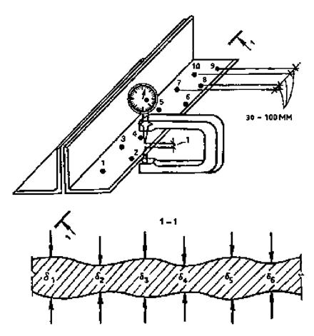
Рис. 1. Схема измерения толщины элементов при сплошной коррозии
При язвенной коррозии, а также при наличии питтингов толщина элементов замеряется с помощью измерительных скоб (рис. 2) или прибора Тимашева (рис. 3).
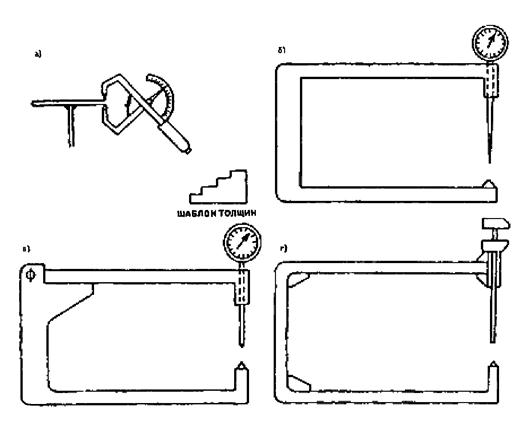
Рис. 2. Инструменты для замеров толщины элементов
а - механический толщиномер; б - коррозионно-метрическая скоба; в - скоба с раскрывающейся рамкой; г - раздвижная скоба
Рис. 3. Схема прибора Тимашева
5.17. За фактическую толщину сечения элемента принимают величину среднего арифметического значения d:
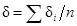
где di - замер толщины сечения в i-й точке; n - число замеров на элементе.
Количество замеров n определяется разбросом данных и точностью измерений. Как правило, при сплошной коррозии число замеров толщины сечений на одном элементе составляет 8 - 10, при язвенной коррозии - 20 - 30.
5.18. Для определения величины коррозионного износа
необходимо знать начальную толщину элемента d0, которая может отличаться от номинальной на величину
допусков на толщину проката. Для определения d0 рекомендуется найти участки поверхности конструкции,
на которых отсутствуют коррозионные повреждения или сохранилось первоначальное
защитное покрытие, и произвести замер толщины элемента. В случае отсутствия
неповрежденного участка начальную толщину d0 следует определять анализом проектных данных с учетом
предусмотренных ГОСТом допусков, а также замеров толщины элементов штангенциркулем.
Производят 5 - 10 замеров и определяют величины среднего арифметического 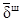 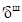
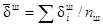
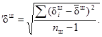
По технической документации выясняют типоразмер
сечения элемента, предусмотренный проектом. Зная дату выпуска проекта и время
постройки объекта, подбором соответствующего сортамента на металлические
профили получают номинальную 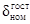 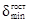
За начальную толщину элемента d0
принимают наибольшую из двух: максимальной, полученной по замерам
штангенциркулем + 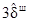
Среднюю величину утонения элемента Dэл, определяют по формуле
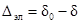
Получив среднее утонение по отдельным элементам, определяют таковые для однородной группы конструкций
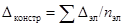
где nэл - число замеренных элементов однородной выборки, необходимое для получения достоверного результата.
Затем определяют среднюю скорость коррозии V для выбранной однородной группы конструкций
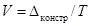
где Т - срок службы конструкции к моменту проведения обследования.
5.19. Результаты освидетельствования фиксируют непосредственно на месте в полевых блокнотах или на специальных бланках (см. рекомендуемое прил. 5).
В целях сокращения времени обследования конструкций, особенно в местах повышенной опасности, целесообразно использовать диктофоны, переговорные устройства, кинокамеры и видеомагнитофоны.
Для повышения наглядности результатов обследования, а также при освидетельствовании наиболее сложных узлов, имеющих дефекты и повреждения как коррозионного, так и некоррозионного характера, следует проводить фотографирование. Объекты съемки маркируют мелом или краской, снабжают масштабными линейками, а пленки сопровождают покадровой ведомостью.
5.20. Если работы по обследованию конструкций определенных объектов проводят в течение нескольких лет, то рекомендуется включать в программу обследований проведение натурных коррозионных испытаний по ГОСТ 9.909-86 и ГОСТ 6992-68 образцов из материалов, соответствующих материалам обследуемых конструкций, и из более коррозионно-стойких материалов, которые можно использовать при замене конструкций, а также образцов с защитными покрытиями, соответствующими примененным для обследуемых конструкций, и с более стойкими покрытиями. Условия испытаний образцов (загазованность, запыленность, образование конденсата, воздействие атмосферных осадков и т.д.) должны соответствовать наиболее жестким условиям, в которых эксплуатируются конструкции данной совокупности. Продолжительность испытаний образцов должна составлять не менее полутора лет. При этом должно быть получено не менее четырех экспериментальных точек за разное время испытаний.
Результаты проведенных испытаний используют для уточнения прогноза развития коррозии и разрушения защитных покрытий в последующий период эксплуатации конструкций.
5.21. Если в процессе проведения обследования выясняется, что объем работ, оговоренный программой, является недостаточным или чрезмерным для оценки надежности и долговечности каркаса здания, сооружения и т.п., руководитель бригады ставит вопрос перед заказчиком и руководством своей организации о необходимости внесения изменений в программу. В случае несогласия заказчика на увеличение объема финансирования бригада через руководство своей организации должна поставить вопрос о необходимом объеме обследования перед организациями и ведомствами, перечисленными в п. 5.6. Подобные решения должны приниматься и в случаях, когда специалисты, проводящие обследование, приходят к выводу об отсутствии предпосылок для проведения специального обследования в оговоренном объеме. Если эти предложения не принимаются, руководство организаций, из которых привлечены специалисты для проведения обследований, должно быть вправе поставить вопрос о прекращении работ без выдачи окончательных рекомендаций, но с оплатой законченных этапов работы. Подобные решения должны приниматься и при отсутствии предпосылок для проведения обследования в полном объеме.
5.22. Результаты обследования, проведенного в объеме, согласованном между заказчиком и исполнителями, должны являться основанием для проектирования усиления и замены элементов конструкций и для проекта противокоррозионной защиты. Этот проект входит составной частью в техническую документацию на здания и сооружения.
6. ОЦЕНКА ТЕХНИЧЕСКОГО СОСТОЯНИЯ И РАЗРАБОТКА МЕРОПРИЯТИЙ ПО ВОССТАНОВЛЕНИЮ НЕСУЩЕЙ СПОСОБНОСТИ И ПРОТИВОКОРРОЗИОННОЙ ЗАЩИТЕ КОНСТРУКЦИЙ
6.1. В оценку технического состояния конструкций входит:
проверочный расчет на фактические и прогнозируемые нагрузки с учетом в расчетной схеме всех выявленных при обследовании отклонений, дефектов и повреждений, фактических свойств стали и выявленных резервов несущей способности;
подразделение отклонений, дефектов и повреждений на допустимые и недопустимые по результатам проверки элементов конструкций на прочность, устойчивость, жесткость и выносливость;
классификация технического состояния конструкций и составление заключения.
Заключение об оценке технического состояния конструкций должно включать:
ведомости дефектов, обнаруженных при обследовании;
справку о характере и интенсивности коррозионного воздействия среды на конструкции;
справку о величине фактических и прогнозируемых нагрузок и воздействий на конструкции;
результаты проверочного расчета конструкций;
рекомендуемые конструктивные решения по восстановлению несущей способности или усилению конструкций, а также мероприятия по защите конструкций от коррозии.
6.2. Прочность и устойчивость элементов и соединений проверяют с учетом обнаруженных при обследовании отклонений, дефектов и повреждений как коррозионного характера, так и образовавшихся по другим причинам. Расчет проводят в соответствии со СНиП II-23-81*, включая разд. 20. Методика расчета приведена в прил. 6.
6.3. Установив источники агрессивного воздействия, интенсивность воздействия и характер разрушения конструкций, специалисты, проводящие обследования, должны уточнить степень агрессивного воздействия среды на различные части конструкций и соответствие принятых проектных решений требованиям СНиП 2.03.11-85. Если проектные решения по выбору материалов конструкций, сварочных материалов, конструктивной формы не соответствуют действующим нормам проектирования, но по результатам обследования конструкции признано целесообразным сохранить, необходимо разрабатывать дополнительные мероприятия по защите конструкций от дальнейшей коррозии.
6.4. В случае установления факта соответствия принятых проектных решений действующим нормам проектирования причины коррозионного разрушения конструкций могут заключаться:
в нарушении правил производства работ по защите конструкций от коррозии;
в чрезмерно длительном периоде между изготовлением конструкций на ЗМК и осуществлением полной их защиты после монтажа;
в несоблюдении режимов эксплуатации систем электрохимической защиты;
в несвоевременном восстановлении защитных покрытий в процессе эксплуатации конструкций (это относится, как правило, к лакокрасочным и битумным защитным покрытиям).
Если выявлена одна из первых двух причин, это необходимо отметить в технической документации на конструкции, а если одна из последних двух причин, необходимо разработать мероприятия по ее устранению.
6.5. Для защиты от коррозии металлических конструкций, запроектированных с нарушением действующих норм по защите строительных конструкций от коррозии, но сохраняемых в здании или сооружении, рекомендуется:
при воздействии слабоагрессивных и среднеагрессивных сред предусмотреть мероприятия в соответствии с требованиями СНиП 2.03.11-85 по защите от коррозии соответственно в среднеагрессивных и сильноагрессивных средах;
при воздействии сильноагрессивных сред, а также для элементов конструкций, изготовленных из материалов, подвергающихся при изучаемых условиях эксплуатации коррозионному растрескиванию, межкристаллитной или расслаивающей коррозии, как правило, необходимо предусматривать замену конструкции или указанных выше элементов, если отсутствуют возможности снизить степень агрессивного воздействия среды или исключить воздействие среды, вызывающей специфические виды коррозии конструкций.
6.6. Восстановление лакокрасочных покрытий на поверхности строительных металлоконструкций необходимо производить по достижении степени их разрушения, соответствующей баллам 2 - 3 (для несущих конструкций в слабоагрессивных средах) или 4 (для несущих конструкций в среднеагрессивных или сильноагрессивных средах и для ограждающих конструкций) по табл. 2 ГОСТ 6992-68*; при снижении показателя адгезии покрытия ниже балла 2, т.е. до 3 - 4 баллов по ГОСТ 15140-78*; при толщине покрытия ниже требований - по СНиП 2.03.11-85.
6.7. Восстановление защитных битумных покрытий необходимо осуществлять при появлении отдельных вспучиваний, отслаиваний покрытий или массовых скоплений продуктов коррозии под покрытиями, а при одновременном использовании электрохимической защиты - при появлении несплошностей на площади, превышающей 5 %. Оценку защитной способности битумных покрытий следует производить по ГОСТ 9.407-84.
6.8. Наладку систем электрохимической защиты необходимо производить в случаях, когда значения потенциалов защищаемых конструкций не соответствуют требованиям ГОСТ 9.015-74* (для подземных сооружений) или отраслевой нормативно-технической документации (для сооружений в жидких средах).
7. ОСОБЕННОСТИ ПРОЕКТИРОВАНИЯ ЗАЩИТЫ ОТ КОРРОЗИИ МЕТАЛЛИЧЕСКИХ КОНСТРУКЦИЙ ЗДАНИЙ И СООРУЖЕНИЙ, НАХОДЯЩИХСЯ В ПРОЦЕССЕ СТРОИТЕЛЬНО-МОНТАЖНЫХ РАБОТ ИЛИ В ЭКСПЛУАТАЦИИ
7.1. Защиту от коррозии не подлежащих усилению или замене конструкций эксплуатируемых зданий и сооружений, как правило, следует производить в соответствии с первоначальными проектами, если их решения не противоречат действующим нормам проектирования. При необходимости внесения изменений в первоначальные проектные решения эти изменения должны быть согласованы с авторами проектов. Проекты защиты от коррозии конструкций старой постройки, как правило, следует разрабатывать заново на основе действующих норм.
7.2. В проекты защиты от коррозии конструкций, находящихся в стадии строительно-монтажных работ, допускается вносить (по согласованию с авторами проектов) изменения в части выбора материалов отдельных конструкций и сварочных материалов, применяемых на монтаже, если решения первоначального проекта не соответствуют действующим нормам. При этом должно быть приведено технико-экономическое обоснование целесообразности принятия подобных решений по сравнению с решением назначить мероприятия по защите от коррозии, соответствующие воздействию более агрессивной среды (см. п. 6.5).
7.3. При проектировании усиления конструкций, находящихся в эксплуатации в условиях воздействия среднеагрессивных и сильноагрессивных сред, необходимо исключать возможность образования узких щелей, зазоров, карманов и пазух, в которых скапливаются влага, пыль и продукты коррозии. Все усиливающие элементы, привариваемые к основным элементам, работающим (рассчитываемым) на сжатие, должны быть обварены по контуру сплошными швами.
При креплении усиливающих элементов к элементам, работающим на растяжение или знакопеременные усилия, не допускается наложение сварных швов поперек силового потока.
Для элементов, работающих (рассчитываемых) на изгиб, усиление растянутой и сжатой зон производят как для элементов, работающих (рассчитываемых) на растяжение и сжатие.
Крепление усиливающих и основных элементов на болтах допускается при использовании не менее двух болтов размерами не менее М16 и не более М24 с расстоянием между центрами отверстий под болты не более 120 мм и расстояниями этих центров от кромок элементов не более 55 мм. Поверхности контакта основных и усиливающих элементов конструкций при креплении последних обычными болтами должны быть полностью защищены от коррозии до создания контакта, при креплении высокопрочными болтами - в соответствии со СНиП 2.03.11-85.
7.4. При необходимости частичного восстановления полимерных покрытий (лакокрасочных, битумных и др.) следует предусматривать полную очистку поверхности на участках восстановления покрытий до металла и нанесение всей системы покрытия на этих участках. Высокие декоративные характеристики конструкций с отремонтированным покрытием достигаются при условии нанесения 1 - 2 последних слоев эмали на всю поверхность конструкций одновременно.
Если сохранившееся лакокрасочное покрытие находится в хорошем или отличном состоянии по ГОСТ 6992-68* (см. п. 6.7), но его толщина не соответствует требованиям норм, необходимо нанести дополнительные слои той же эмали, которой защищены конструкции. Количество слоев рассчитывают по Рекомендациям по проектированию защиты от коррозии строительных металлоконструкций.
7.5. Очистка от окислов поверхности несущих стальных конструкций, эксплуатируемых в средах со среднеагрессивной или сильноагрессивной степенями воздействия, должна быть произведена до степени не ниже 2 по ГОСТ 9.402-80*, т.е. с применением пескоструйной или дробеструйной обработки. Если работы должны быть проведены в действующем цехе без демонтажа оборудования, то необходимо разрабатывать проект производства работ, предусматривающий исключение попадания песка, дроби, грязи в зоны рабочих площадок и размещения оборудования. Очистку от окислов поверхности несущих стальных конструкций, предназначенных для эксплуатации в средах со слабоагрессивной степенью воздействия, следует осуществлять дробеструйной или пескоструйной обработкой, приводными металлическими щетками, иглофрезами и т.п. до степени очистки не ниже 3 по ГОСТ 9.402-80*.
7.6. Применение преобразователей и модификаторов ржавчины по ГОСТ 9.402-80* для подготовки поверхности перед окрашиванием допускается предусматривать только для местной обработки поверхностей ограждающих конструкций из холоднокатаной стали, в том числе оцинкованной, тонколистовых (до 4 мм) конструкций из горячекатаной стали, а также несущих стальных конструкций из толстолистового или фасонного проката, эксплуатируемых в средах со слабоагрессивной степенью воздействия, при условиях, что:
площадь поверхности восстанавливаемых покрытий не превышает 25 % площади поверхности конструкций;
конструкции подвергаются сплошной равномерной коррозии;
на участках, на которых лакокрасочное покрытие подлежит восстановлению, полностью разрушена или удалена прокатная окалина (для горячекатаной стали) или практически полностью разрушено цинковое покрытие (для оцинкованной стали);
ржавчина представляет собой тонкий трудноудаляемый налет или равномерный плотный слой толщиной не более 50 мкм.
7.7. Узкие щели, зазоры, карманы, полости и т.п., внутренняя поверхность которых недоступна для очистки до степени 2 или 3 по ГОСТ 9.402-80*, целесообразно загерметизировать в процессе усиления конструкций, применяя для этого герметизирующие полимерные составы, консистентные смазки, обварку элементов конструкций, работающих (рассчитываемых) на сжатие или (для оснований колонн и т.п.) замоноличивание части конструкций в бетон.
7.8. При необходимости частичного восстановления металлических защитных покрытий на поверхности конструкций из толстолистового и фасонного проката рекомендуется предусматривать газотермическое напыление цинка или алюминия. Перед нанесением нового покрытия стальную поверхность необходимо очистить от старых покрытий и продуктов коррозии до степени 1 по ГОСТ 9.402-80*, т.е. дробеструйной или пескоструйной обработкой в соответствии с Рекомендациями по проектированию защиты от коррозии строительных металлоконструкций. Новое покрытие должно перекрывать слои старого покрытия на ширину не менее 100 мм. Поверхность старого покрытия на этих участках тоже обрабатывают дробеструйным или пескоструйным методом. Если при этой обработке старое покрытие начинает шелушиться и отслаиваться, то следует, подобрав наиболее мягкий режим обработки, обеспечивающий требуемую шероховатость поверхности, обработать всю поверхность старого покрытия и удалить его со всех участков поверхности, на которых оно шелушится или отслаивается.
Вместо газотермического напыления цинка или алюминия допускается предусматривать лакокрасочное покрытие на основе протекторной грунтовки ЭП-057.
Ремонтная защита тонколистовой оцинкованной стали должна быть осуществлена лакокрасочными покрытиями по рекомендациям ЦНИИпроектстальконструкции им. Мельникова.
7.9. Ремонтную защиту от коррозии гибких элементов конструкций следует предусматривать с применением консистентных смазок с достаточно высокой температурой каплепадения. Допускается предусматривать окрашивание гибких элементов конструкций в слабоагрессивных средах лакокрасочными материалами перхлорвиниловыми и на основе сополимеров винилхлорида после предварительного нанесения одного слоя грунтовки ВЛ-02 и двух слоев эмали ВЛ-515. При этом следует уделять особое внимание необходимости полного удаления продуктов коррозии и тщательного обезжиривания каждой проволоки. В связи с трудностью такого обезжиривания гибких элементов на действующих объектах защиту лакокрасочными покрытиями следует в первую очередь предусматривать для элементов конструкций из канатов закрытого типа.
7.10. Ремонтную защиту от коррозии конструкций из алюминиевых сплавов с анодно-окисным покрытием необходимо производить лакокрасочными покрытиями на основе протекторной грунтовки ЭП-057. Перед нанесением грунтовки поверхность конструкций следует очистить от разрушившегося покрытия кварцевым песком или круглой стальной дробью, чтобы на поверхности конструкций не оставалось осколков и пыли рабочего материала (дроби, песка).
8. ТЕХНИКА БЕЗОПАСНОСТИ ПРИ ПРОВЕДЕНИИ ОБСЛЕДОВАНИЙ КОНСТРУКЦИЙ В АГРЕССИВНЫХ СРЕДАХ
8.1. При производстве работ по обследованию строительных металлических конструкций зданий и наземных сооружений работники бригады, проводящей обследование, обязаны соблюдать нормы и правила СНиП III-4-80, требования правил техники безопасности, принятых на предприятии, на котором проводят обследование, и правил, утвержденных в организации, проводящей обследование. При производстве работ по обследованию строительных металлических конструкций подводных и подземных сооружений, а также конструкций, находящихся под воздействием ядовитых или взрывоопасных жидкостей, газов, паров, необходимо разрабатывать проекты организации работ, утверждаемые руководителями предприятий-заказчиков и организаций, проводящих обследования, и соответствующие требованиям отраслевой нормативно-технической документации по правилам техники безопасности.
8.2. До начала работ по обследованию конструкций зданий и наземных сооружений оформляют следующую документацию:
технологическую записку, в которой указывают способы и средства доступа к обследуемым конструкциям, устанавливают опасные зоны, вид и концентрацию загрязнений воздушной среды, отражают организационные и технические мероприятия по обеспечению безопасности; технологическая записка утверждается главным инженером предприятия и согласовывается с представителем подрядчика;
руководитель предприятия-заказчика издает приказ по организации работы с перечислением лиц, участвующих в обследовании, спецмероприятий по обеспечению безопасных условий труда с указанием начала и окончания работ по обследованию;
наряд-допуск на проведение работ, который должен быть выдан в соответствии с пп. 1.6 - 1.7 СНиП III-4-80; наряд-допуск оформляется лицом, уполномоченным на это руководителем предприятия-заказчика, и подписывается должностным лицом обследуемого цеха;
лица, проводящие натурные обследования, должны в соответствии с ГОСТ 12.0.004-79 пройти вводный (общий) инструктаж в отделе техники безопасности предприятия-заказчика, а также инструктаж по технике безопасности непосредственно в цехе, где будет проводиться обследование конструкций; инструктаж в цехе проводит начальник цеха или его заместитель.
8.3. Лица, не прошедшие инструктаж по технике безопасности, к работе не допускаются. К работе на высоте допускаются лица от 18 до 60 лет, прошедшие специальное медицинское освидетельствование.
8.4. Лица, проводящие обследование, используют необходимую спецодежду и защитные средства:
защитные каски по ГОСТ 12.4.087-84;
предохранительные пояса по ТУ 36-2103-82 с указанием места закрепления карабина и страховочных канатов по ГОСТ 12.4.107-82;
спецодежду, которая не должна иметь болтающихся и свисающих частей во избежание зацепления с движущимися частями механизмов и токопроводящими элементами;
маски, очки, респираторы, противогазы, кислородные изолирующие приборы, вентилируемые скафандры и т.д.; проведение работ без этих защитных средств не допускается при содержании в атмосфере агрессивных газов в концентрациях выше предусмотренных группой В по СНиП 2.03.11-85, а также солей, аэрозолей и пыли при выпадении их свыше 25 мг/м2×сут.
8.5. Все работы на высоте более 3 м, как правило, должны проводиться с подмостей. Выполнение этих работ без подмостей допускается только при невозможности их устройства, с обязательным применением монтажных поясов и при наличии предохранительных приспособлений (натянутых стальных канатов, страховочных сетей и т.д.).
8.6. Ежедневно перед началом работ должна быть организована проверка состояния подмостей ограждений, люлек, лестниц, и, в случае их неисправности, должны быть приняты необходимые меры.
8.7. Зоны, в пределах которых постоянно действуют опасные производственные факторы, следует обозначать знаками опасности и надписями установленной формы.
К зонам постоянно действующих опасных производственных факторов относятся:
зоны вблизи неизолированных токоведущих линий и электроустановок;
зоны перемещения кранов, машин и оборудования или их частей и рабочих органов;
зоны, где содержатся вредные вещества в концентрациях выше предельно допустимых или воздействует шум интенсивностью выше предельно допустимой.
8.8. При проведении работ на участках с опасными или вредными условиями труда работники, проводящие обследование, должны проходить медосмотр в порядке, установленном Минздравом СССР для лиц, постоянно работающих на данном предприятии, в соответствии с приказом Минздрава СССР.
8.9. Перед производством работ на высоте, в загазованных зонах, местах интенсивной работы механизмов, кранов и других зонах, где по условиям ведения работ предъявляются повышенные требования по технике безопасности, руководитель работ должен получить от представителя завода допуск или наряд на работы, связанные с особой опасностью. В этом допуске или наряде должны быть указаны все необходимые мероприятия, обеспечивающие безопасные условия проведения работ.
Перед началом работ в загазованных зонах предприятие-заказчик обязано предоставить исполнителям данные об ожидаемом распределении концентрации вредных примесей в воздухе от уровня пола до верха обследуемых конструкций и данные о предельно допустимых концентрациях специфических веществ, находящихся в атмосфере воздуха на данном предприятии и не приведенных в СНиП 2.03.11-85.
8.10. При работе с электрооборудованием следует выполнять требования ГОСТ 12.1.013-78 и общие требования разд. 12 СНиП III-4-80.
8.11. Проведение работ в зонах работы мостовых кранов допускается лишь в случае разрешения представителя администрации цеха. Участок работ должен быть огражден концевыми упорами или линейками для концевых выключателей. Троллеи на этом участке должны быть отключены и закорочены.
8.12. При использовании для обследования грузоподъемных механизмов необходимо:
руководствоваться правилами Госпроматомнадзора СССР;
работы проводить в присутствии работника крановой или энергетической службы цеха, обеспечивающего остановку кранов, отключение электролиний и т.п.;
установить порядок обмена условными сигналами между руководителем работ и крановщиком; все сигналы, кроме команды «Стоп», которая может быть подана любым работником, заметившим опасность, подаются только руководителем работ; во время перемещения крана запрещается находиться на его мосту;
проводить обследование в зданиях с тяжелым режимом работы кранов предпочтительно в период ремонта технологического оборудования, а при одно- или двухсменной работе - вне рабочей смены.
8.13. Работы по обследованию конструкций должны проводиться группой не менее чем из двух человек, находящихся в пределах прямой видимости в течение всего времени работы.
8.14. Проход по нижним поясам ферм и подкрановых балок разрешается лишь при наличии натянутого вдоль конструкции каната (троса), за который должен быть зацеплен карабин монтажного пояса. Провисание или ослабление каната не допускается.
8.15. Все работы, связанные с установкой и подключением приборов, следует согласовывать с руководством цеха.
8.16. В случае получения даже легкой травмы (ушиб, порез, ожог, засорение глаза и т.п.) следует немедленно обратиться за помощью в ближайший медпункт.
ПРИЛОЖЕНИЕ 1
Рекомендуемое
РЕЗУЛЬТАТЫ ИЗМЕРЕНИЙ ПАРАМЕТРОВ ВОЗДУШНОЙ СРЕДЫ ПРОИЗВОДСТВЕННЫХ ПОМЕЩЕНИЙ
|
Дата замера |
Наружный воздух |
Внутренняя воздушная среда помещений |
||||||||||
|
время замера |
температура, °С |
относительная влажность, % |
время замера |
цех |
отделение |
№ сечения и пункт замера |
температура, °С |
относительная влажность, % |
агрессивные компоненты |
концентрация, мг/м3 |
состояние вентиляции (аэрации) |
|
|
Дата отбора проб |
№ пробы |
Цех |
Отделение конструкций, с которых отобрана проба |
Результаты исследований проб пыли с поверхности металлических конструкций |
|||||||
|
толщина пылеотложений, мм |
химический состав пыли |
растворимость, г/л |
степень гигроскопичности |
характеристики неорганических жидких сред (проливов) |
|||||||
|
рН |
Сl-, г/л |
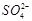 , г/л |
прочие |
||||||||
ПРИЛОЖЕНИЕ 2
Рекомендуемое
МЕТОДИКА РАСЧЕТА ПРОДОЛЖИТЕЛЬНОСТИ УВЛАЖНЕНИЯ ПОВЕРХНОСТИ МЕТАЛЛИЧЕСКИХ КОНСТРУКЦИЙ АДСОРБЦИОННОЙ ПЛЕНКОЙ ВЛАГИ ДЛЯ ПРОИЗВОДСТВЕННЫХ ПОМЕЩЕНИЙ
(предложена Макеевским инженерно-строительным институтом - кандидатами техн. наук Е. В. Гороховым и В. П. Королевым)
Методика предназначена для определения температурно-влажностного режима силами предприятий с привлечением специалистов по защите от коррозии из специализированных организаций. Расчет выполняется по экспериментальным данным о характеристиках эксплуатационных сред внутри промышленных зданий. Замеры внутрицеховой среды производят в характерных точках однородных зон эксплуатации строительных конструкций.
Характерной точкой для участка или зоны проведения измерений является такое место расположения измерительных приборов, в котором в пределах установленной зоны влияние технологических факторов на формирование эксплуатационной среды принимается одинаковым. Строительный объем здания подразделяется на зоны в зависимости от характера и расположения источников производственных выделений. Зонирование внутрицеховой среды осуществляется в плане и по высоте с учетом строительных решений каркаса промышленного здания.
Измерения суточного хода влажности и температуры внутрицеховой среды производят самопишущим гигрографом М-21 и термографом M-16a. Контрольные измерения влажности и температуры производят аспирационным психрометром МВ-4М. Одновременно производят измерение колебаний температуры и влажности в атмосферных условиях. Для учета влияния сезонного характера воздействий метеорологических условий на изменение внутрицеховой среды измерения производят в различное время года.
Характеристики 24-строчных измерений температуры и влажности с интервалом в 1 ч переносят с диаграммных бланков в рабочие журналы для статистической обработки. Для описания характера зависимости температуры и влажности внутрицеховой среды от изменения атмосферных значений температурно-влажностного комплекса (ТВК) рассматривают следующие четыре варианта условий (см. таблицу).
I. Условия температурно-влажностного режима характерной точки (ТВРХТ) не определяются характером технологических процессов и не зависят от ТВК атмосферных явлений.
II. Условия ТВРХТ не определяются характером технологического процесса и зависят от суточного колебания атмосферных явлений.
III. Условия ТВРХТ определяются характером технологического процесса и не зависят от суточного колебания ТВК атмосферных явлений.
IV. Условия ТВРХТ определяются характером технологического процесса и зависят от суточного колебания атмосферных явлений.
Приведенные варианты определяются условиями соответствия следующих характеристик:
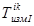 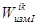
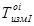 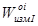
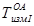 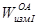
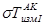 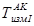
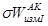 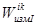 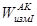
Блок-схема алгоритма вычисления расчетных значений ТВРХТ разработана Макеевским инженерно-строительным институтом.
В результате расчета получаем следующие характеристики ТВРХТ:
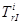 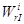
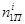 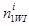
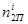 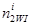
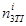 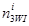
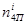 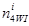
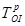 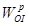
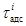
Полученные расчетные характеристики температурно-влажностного режима позволяют учитывать изменение метеорологических условий для рассматриваемой группы цехов промышленного производства. От расчетного значения времени пребывания адсорбционной пленки влаги зависит степень агрессивного воздействия на элементы металлоконструкций.
Используя полученное значение и данные о содержании SO2 или NaCl в помещении цеха, рассчитывают среднюю скорость проникновения коррозии стали по ГОСТ 9.040-74. Затем, руководствуясь Рекомендациями по проектированию защиты от коррозии строительных металлоконструкций, по данным о скоростях проникновения коррозии, устанавливают степень агрессивного воздействия среды в характерной точке i.